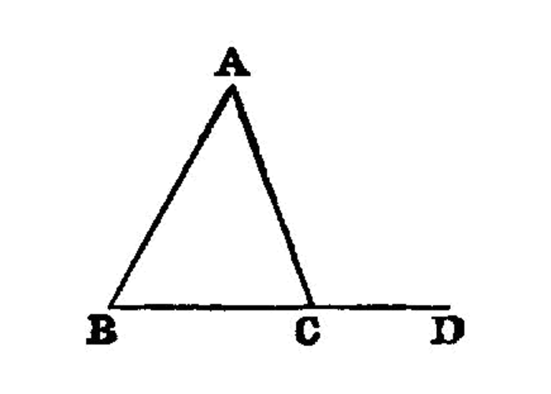

the sum of any two angles of a triangle is less than two right angles
I.17
In any triangle two angles taken together in any manner [1] are less than two right angles.
—Euclid
{kind=link}
Let ABC be a triangle; I say that two angles of the triangle ABC taken together in any manner are less than two right angles.
For let BC be produced to D. [I.post.2]
Then, since the angle ACD is an exterior angle of the triangle ABC,
it is greater than the interior and opposite angle ABC. [I.16] <pb n=”282”/>
Let the angle ACB be added to each;
therefore the angles ACD, ACB are greater than the angles ABC, BCA. But the angles ACD, ACB are equal to two right angles. [I.13]
Therefore the angles ABC, BCA are less than two right angles.
Similarly we can prove that the angles BAC, ACB are also less than two right angles, and so are the angles CAB, ABC as well.
Therefore etc.
references
[I.13]: /elem.1.13 “Book 1 - Proposition 13” [I.16]: /elem.1.16 “Book 1 - Proposition 16” [I.post.2]: /elem.1.post.2 “Book 1 - Postulate 2”